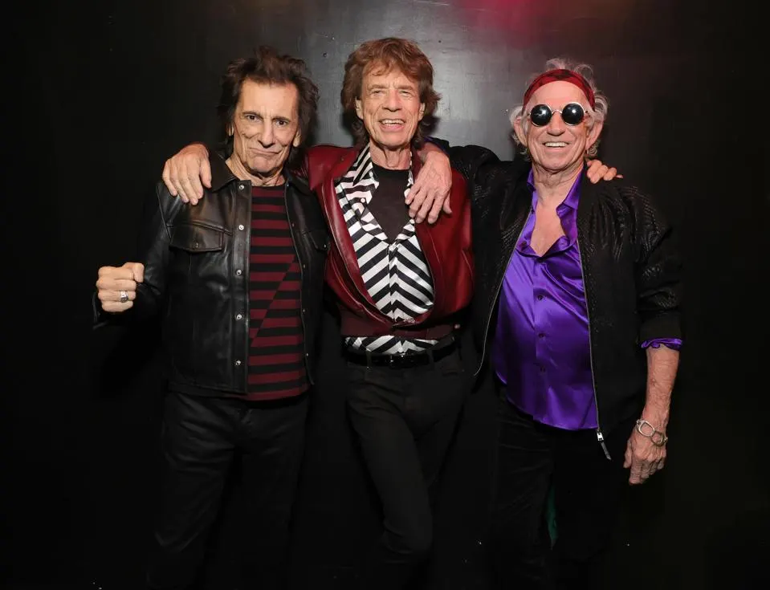
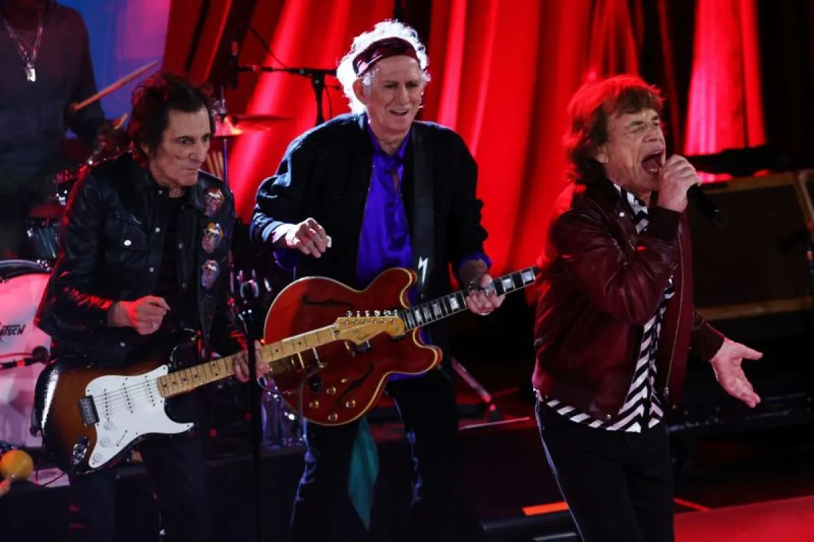
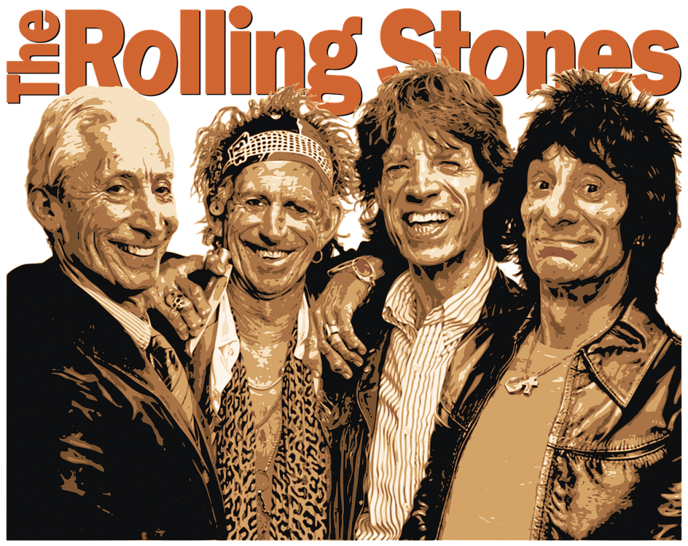
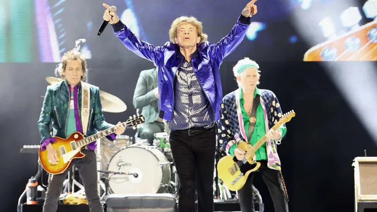
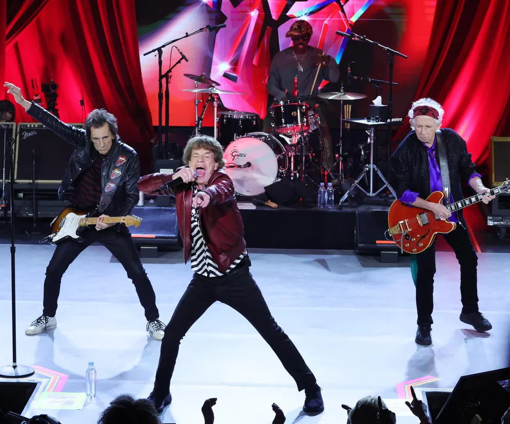
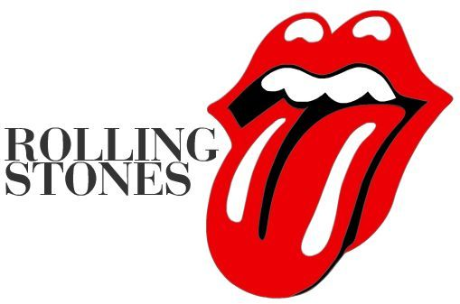
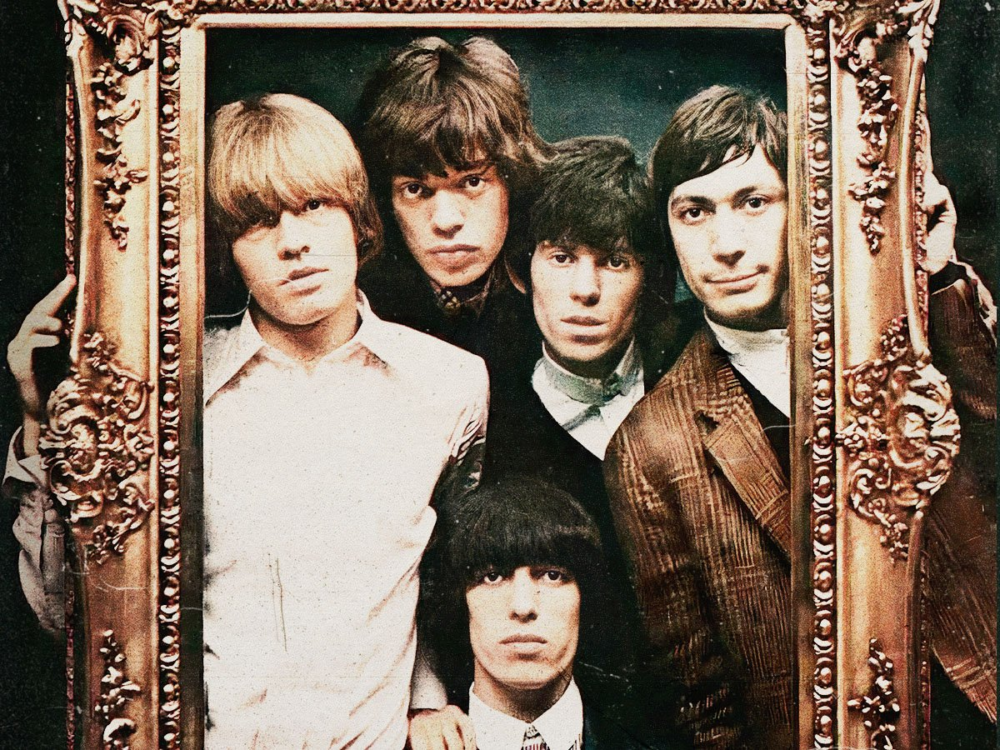

Про концерт
Дата: 10 червня 2025
Місце: Харків Арена: "Металіст"
Початок: 19:00
Гурт The Rolling Stones повертається в Україну!
Приєднуйтесь до нас у найгарячішому концерті року!
Галерея
Фото 1
Фото 2
Фото 3
Фото 4
Фото 5
Фото 6
Фото 7
Відео
Відео 1
Відео 2
Музика
Історія гурту
Легендарний гурт The Rolling Stones вперше виступить у Харкові...
«The Rolling Stones» (укр. Ро́ллінг Сто́унз) — англійський рок-гурт, утворений 1962 року в Лондоні. Творчість гурту ґрунтується на блюзі й рок-н-ролі 1950-х. Здобувши успіх у Великій Британії, «The Rolling Stones» стали популярними у США під час «британського вторгнення» у 1960-х, і у всьому світі. Гурт випустив 22 студійні альбоми (британські версії; у США видано 24 альбоми), 8 концертних альбомів (9 у США) і численні збірники. У 1989 гурт включено до Зали слави рок-н-ролу. Зайняв 4 місце в рейтингу найкращих музичних виконавців за версією журналу «Rolling Stone» 2004 року і друге місце у подібному рейтингу сайту Acclaimedmusic. Склад Мік Джаггер — вокал, гармоніка Кіт Річардс — гітара Ронні Вуд — гітара, бас-гітара та концертні/студійні музиканти. Дискографія Докладніше: Дискографія The Rolling Stones До 1967 року гурт видавав дві різні версії платівок: для США і для Великої Британії — вони могли мати різні назви, обкладинки та дещо інший список пісень.
Студійні платівки
Велика Британія (1964 — 1967) The Rolling Stones (квітень 1964) The Rolling Stones No. 2 (січень 1965) Out of Our Heads (вересень 1965) Aftermath (квітень 1966) Between the Buttons (січень 1967) Сполучені Штати (1964 — 1967) The Rolling Stones (травень 1964) 12 X 5 (жовтень 1964) The Rolling Stones, Now! (лютий 1965) Out of Our Heads (липень 1965) December's Children (And Everybody's) (листопад 1965) Aftermath (червень 1966) Between the Buttons (лютий 1967) Flowers (липень 1967) від 1967 року Their Satanic Majesties Request (грудень 1967) Beggars Banquet (грудень 1968) Through the Past, Darkly (Big Hits Vol. 2) (вересень 1969) Let It Bleed (грудень 1969) Sticky Fingers (квітень 1971) Exile on Main St. (травень 1972) Goats Head Soup (серпень 1973) It's Only Rock'n Roll (жовтень 1974) Made in the Shade (червень 1975) Black and Blue (квітень 1976) Some Girls (червень 1978) Emotional Rescue (червень 1980) Tattoo You (серпень 1981) Undercover (листопад 1983) Dirty Work (березень 1986) Steel Wheels (вересень 1989) Voodoo Lounge (липень 1994) Bridges to Babylon (вересень 1997) A Bigger Bang (вересень 2005) Blue and Lonesome (грудень 2016) Hackney Diamonds (2023)